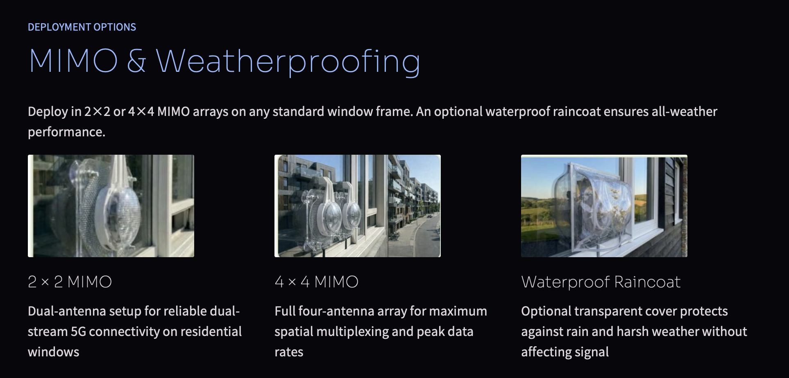
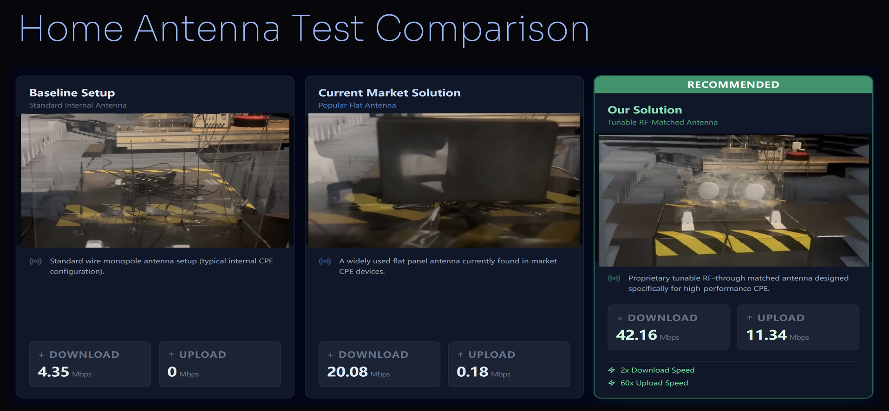

Glassdio 5G direction-tunable window external antenna
Tunable antenna features
Existing 5G Problem
Mid-band 5G (3.3–4.2 GHz) has higher path and penetration loss. Windows are the least-loss entry path but still add several dB, depending on glazing and angle of incidence. Typical indoor CPEs placed away from the window add ~2–5 dB of indoor path/multipath loss and cannot control angle of arrival, leaving SINR suboptimal. Many competing window-mount externals are large, opaque, wide-beam (~3–4 dBi) and lack steering, blocking light and underperforming at oblique angles.
Product Solution
A transparent, low-profile, manual beam-steering window antenna that adheres directly to glass. Users adjust azimuth/elevation toward the serving cell or a cleaner reflected path to maximize SINR. The EM-wave is optimized for through-glass coupling, reducing reflection/absorption at mid-band. A description of antenna installation for radiation angle tuning.
Evidence and Comparison
RSRP improvement up to +9–10 dB versus users’ initial indoor CPE placement after on-glass mounting and beam tuning.
Compared with Alternatives
-
Indoor-only CPE antennas: By attaching on-glass and steering the beam, our solution avoids an extra ~2–5 dB of room loss and ~1–2 dB of orientation penalties, and adds directional gain, yielding up to ~9–10 dB improvement in practice.
-
Fixed opaque panels: Provide some gain but no steering; misalignment to the through-glass path causes extra reflection loss and lower SINR, typically yielding only ~3–4 dB effective improvement. In many low-gain scenarios, our Product (2) can already replace these.
-
Outdoor high-gain directional antennas (~10 dBi): Require long cables (feed loss), weatherproof mounting hardware, drilling/cable passthroughs, and professional installation. Realized net gain often only ~6–10 dB after cable losses, with higher cost, time, and weather exposure risk.
-
Indoor high-gain directional antennas (~10 dBi): Incur at least ~3 dB window attenuation at typical angles and are limited to a narrow pointing range (±30°). If made less bulky, actual gain is lower; walls add further attenuation.
Key Features
-
Transparency and form factor: ~70% of the area is highly transparent; low, flat profile preserves daylight and aesthetics.
-
Manual beam steering: ±45° azimuth/elevation range for efficient cell/reflection finding; on-mount scale/marks enable repeatable alignment.
-
Through-glass coupling: High-permittivity, low-loss materials recover ~3–4 dB otherwise lost to glazing at common incidence angles (20°–60°).
-
Installation: Adheres directly to glass; tool-free setup; short, low-loss pigtail minimizes feed loss.
-
Compliance/usability: No drilling or exterior fixtures; renter-friendly and suitable where external mounts are restricted.
* Note: Specifications and data may be modified based on the development process.
Installation & Comparison Details
Antenna Installation

Antenna Comparison
